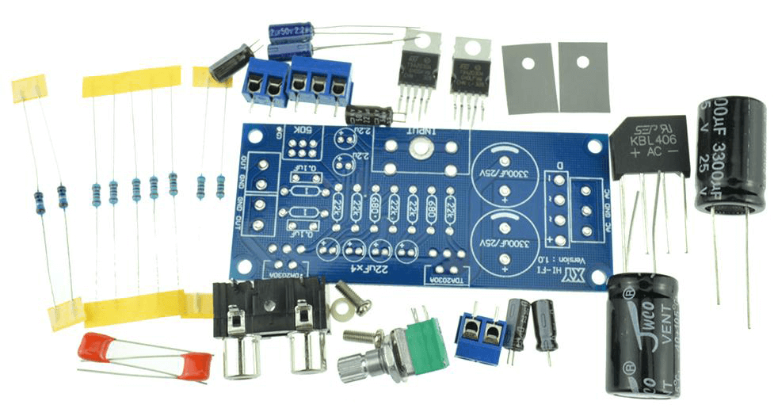

El objetivo de la práctica consiste en realizar un proyecto libre y coherente con 9 de los componentes que hemos visto hasta ahora.

(1) x Placa Arduino
(1) x Protoboard
(-) x Resistencias
(-) x M M cables (cables de puente de macho a macho)
Además, utilizaremos 9 componentes entre los siguientes:
(1) x LED de 5mm
(1) x LED RGB
(1) x Interruptor de presión
(1) x Zumbador
(1) x Zumbador pasivo
(1) x Sensor de inclinación
(1) x Potenciómetro
(1) x Servomotor
(1) x Sensor ultrasónico
(1) x Pantalla LED
(1) x Módulo de humedad y temperatura DHT11
(1) x Sensor de Temperatura TMP36
Pueden utilizarse más de uno de cada tipo.